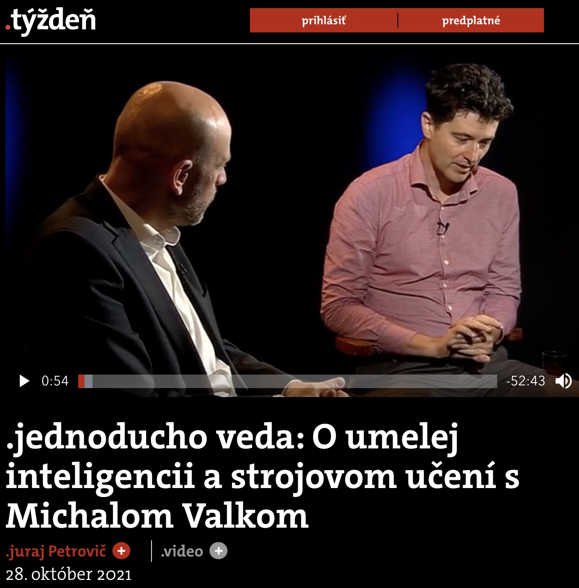
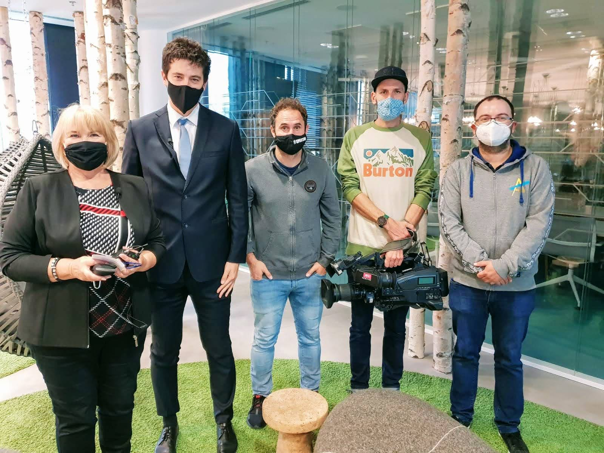
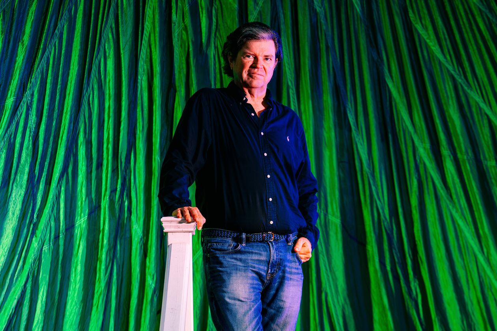

Press
- Michal Valko: Guest of Radio Slovakia Interview with Nora Gubková - Radio Slovakia (November 2023)
-
Tom Cruise’s mother had no children. Wait, what? Interview with Matúš Beňo - Sme/Slovak Spectator
(November 2023)
- AI expert Michal Valko: Current AI systems do not have a grain of consciousness Interview with Milan Čupka - Forbes (September 2023)
- EEML press
(July 2023)
- TASR:VIDEO: The summer school brought world experts in AI to Košic
- RTVS: Slovak National Public TV news on EEML
- Polish coverage: Instead of holidays, they chose science. In Košice they learn about learning
- SME: Artisans of artificial intelligence in a steel city
- StartItUp: Recognized world experts for artificial intelligence came to Košice
- Rádio Košice: Košice gets European gets leaders in artificial intelligence to lecture
- NexTech: The summer school brought to Košice the world leaders in the field of artificial intelligence
- DennikN: How to apply in IT when artificial intelligence is already programming? Cultivate logical thinking, advises the head of DeepMind research
- PC Revue: Video: Summer school of machine learning
- TA3: In Košice, they are tackling artificial intelligence. They cooperate with the world's leading experts
- HN Online: We have already seen the future today
- We have a chance to improve humanity's access to energy and medicine, says an artificial intelligence expert - Interview with Zuzana Vitková, Journal "Dennik N", Slovakia (October 2022)
- Scientist Valko on AI and curiosity - Interview with Braňo Dobšinský - Journal "Aktuality.sk", Slovakia (October 2022)
- Science in the world Interview with Dáša Omastová - Radio Slovakia (October 2022)
-
Interview - TV show "Science and technology", Interview with Gregor Mareš (October 2022) -
Interview - Morning TV News, Slovakia (October 2022) - Vedec Valko: Empatická umelá inteligencia je sci-fi - Journal Sme, Slovakia (December 2021)
- O umelej inteligencii a strojovom učení s Michalom Valkom .týždeň - .jednoducho veda (October 2021) 
- Slovenský vedec Michal Valko žije vo Francúzsku, kde sa špecializuje na výskum umelej inteligencie - Rádio Expres (October 2021)
- Veda podľa Valka najviac prosperuje, keď si vedci majú čas klásť otázky - Rozhovory ZKH (October 2021)
- L’apprentissage automatique apprivoise les graphes - Data Analytics Post (July 2021)
- BYOL and self-supervised learning - Data Analytics Post (April 2021)
- Discussion science helps - Covid-19 (December 2020)
-
Slovak national TV: Zaostrené - Správy RTVS - profil
(November 2020) -
full video -
youtube -
00:38:54
 - Radio Slovakia International - How AI scientists are dealing with the ethical concerns (November 2020)
- Slovak journal: Pravda (November 2020)
-
Slovak journal: Hospodárske noviny -
AI (October 2020) - Slovak national radio: RTVS Rádio DEVÍN - Akadémia (October 2020)
- Radio Slovakia International - Slovakia Today with Jonathan McCormick (October 2020)
- ESET Science Awards - Ceremony (October 2020)
- Forbes - Nahradia roboti lekárov a budú obchody bez pokladní? (October 2020)
- Slovak national radio: Rádio FM - Hľadáme algoritmy na pomoc klíme či opravu tkaniva, zaujímajú nás veľké problémy - video (October 2020)
- SME podcast Klik - Klik špeciál: Aj umelá inteligencia zvykne katastroficky zabúdať (October 2020)
- Forbes Technologies - Ako algoritmy a AI menia náš každodenný život (October 2020)
- Wall Street Journal - Self-supervised learning with Le Cun (FAIR), Valko (DeepMind), Gil (IBM), and Cho (NYU) (August 2020) 
- Denník N - Slovak national newspaper (July 2020) We want to solve problems that would deserve a Nobel Prize
-
#NEWSam - Armenian national TV
(November 2019)
AI will be much more communicative in next 5-10 years - Invited to speak at ARTE on AI (October 2019)
- Invited to speak at France Culture - La Méthode scientifique (April 2019)
- Daniele Calandriello wins the prize for the Best AI Thesis in France in 2018. (April 2018) inriaCP inriaCP cnrs lille1 actu lavoixdunord newstank
- Adobe research highlights our work on online influence maximization presented at NIPS 2017 (January 2018) archive
- CNRS publishes a French article about zonotope sampling presented at ICML (2017) archive
- Julien Seznec, our PhD student publishes an article in Les Echos that discusses ML for education (November 2017) archive
- A. Lazaric about our work on ML for education (December 2016) archive and french
- Interview with N. Vayatis and M. Valko Graphs in ML course at ENS/MVA (July 2015) archive and french
- Interview Rue89 about machine learning at Inria (June 2015)
-
Intel
advertising face recognition (February 2015) archive - Interview on "Biometric applications will soon be part of our daily life" at ARTE Future (November 2014)
- Interview on "Face Recognition" at Sciences et Avenir (July 2014)
- Ford and Intel Mobii project using Face Recognition, at engadget.com (June 2014) archive
- Ford prototype using Face Recognition at intel.com (June 2014) archive
- Intel collaborates with Inria on Face Recognition, at inria.fr (March 2013 ) archive
- Business Magazine Profit/Trend on studying abroad, (2010) archive
{kind=link}
{kind=link}
{kind=link}
{kind=link}
{kind=link}
{kind=link}
{kind=link}
{kind=link}
{kind=link}
{kind=link}
{kind=link}
{kind=link}
{kind=link}
{kind=link}
{kind=link}
{kind=link}
{kind=link}
{kind=link}
mv